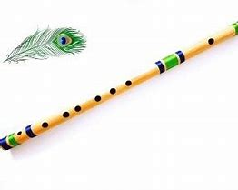

Description:
Premium Concert Quality NADVENU QUENA A BASS Flute. It is 20 inches long and weighs 70 grams, is made of quality seasoned bamboo, and the incredible tonal quality of our bansuri with extreme accuracy in-studio atmosphere and stage. This flute has a perfect tune in three octaves. There is a perfect balance between the higher and lower octaves on this flute. More than 2.5 octaves can be played on this flute. The quena (pronounced kay-nah) is a traditional flute of the Andes. It is typically in the key of G, has six holes and a thumb hole and plays the diatonic major (do re mi) scale. It is known for it’s distinct timber and strong voice. The quena is a South American wind instrument, mostly used by Andean musicians
Price:
6789 Rs.